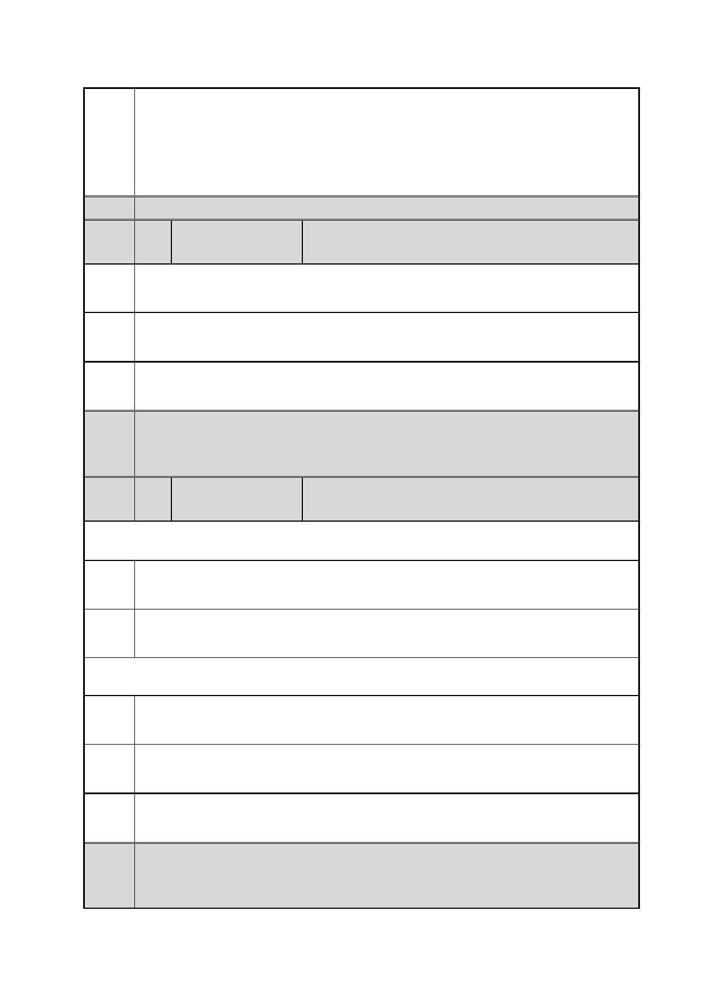

臺北市都市計畫委員會 公民或團體陳情意見綜理表
「變更臺北市信義區逸仙段二小段 33 地號等 21 筆土地（原臺北機廠）
案
名
工業區為創意文化專用區、特定專用區、道路及綠地用地主要計畫案」
及「擬定臺北市信義區逸仙段二小段 33 地號等 21 筆土地（原臺北機
廠）創意文化專用區、特定專用區、道路及綠地用地細部計畫暨劃定
都市更新地區計畫案」
決議
編
號
陳情
理由
22 陳情人
段○君
反對臺北機廠改為創意文化區與美術館，因為與機廠本身文化價值不
符。
建議 建議改為交通科技博物館，符合文化脈絡。
辦法
市府 同編號 2 市府回應內容。
回應
委員
會議 內容同編號 1。
決議
編
號
23 陳情人
吳○哲
102.12.10.第一次陳情
陳情
理由
建議
辦法
歷史建物應全區保留，工業遺址應全數納入文資歷史建物全保留。
全區保留，改成鐵道博物館。
102.12.17.第二次陳情
陳情 全區屬歷史建物，亦為工業遺跡，內涵珍貴鐵路文物，故需全區保留。
理由
建議 全區保留，改建成鐵道博物館。
辦法
市府 同編號 1 市府回應內容。
回應
委員
會議 內容同編號 1。
決議
第 31 頁/共 154 頁